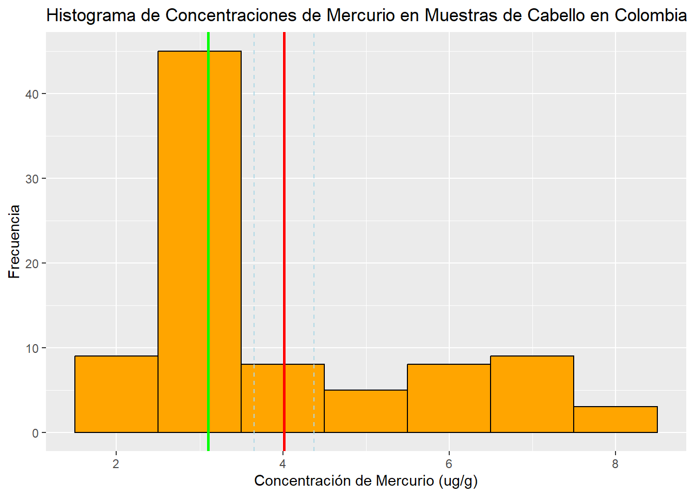
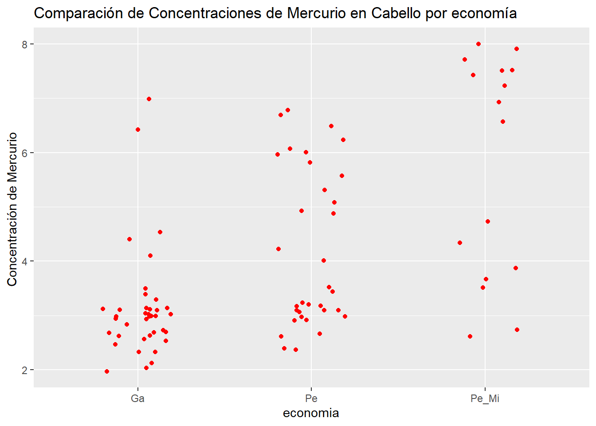
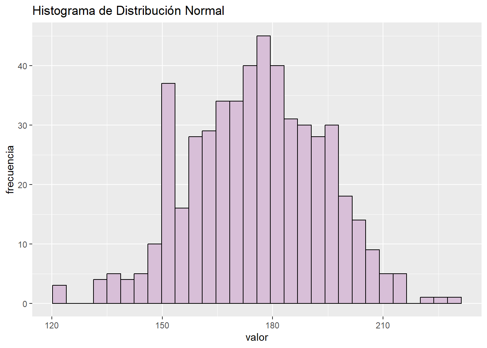
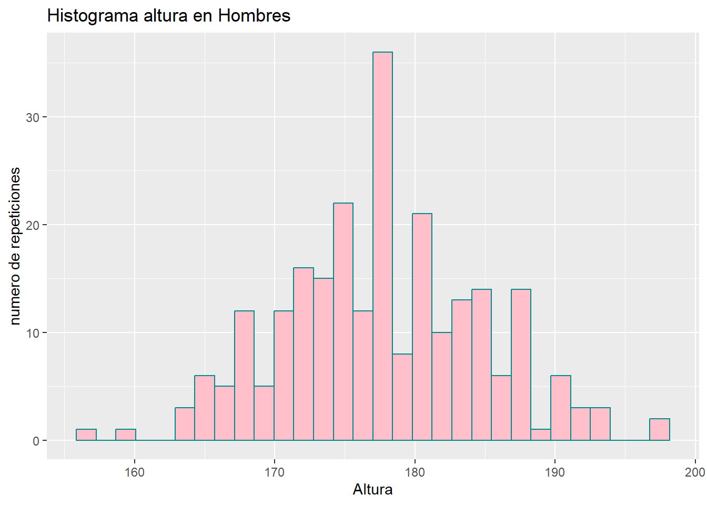
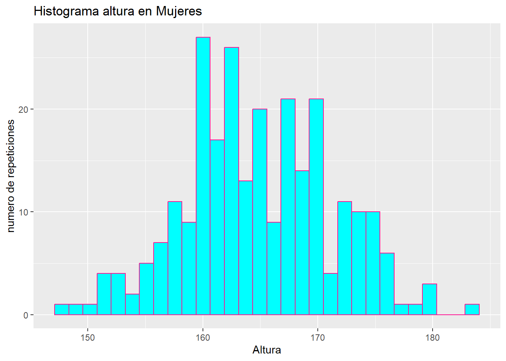
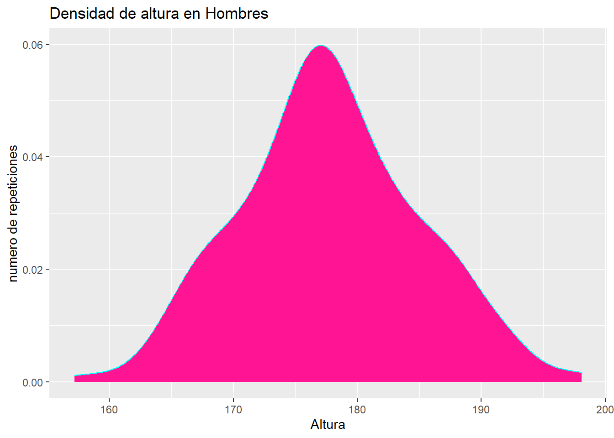
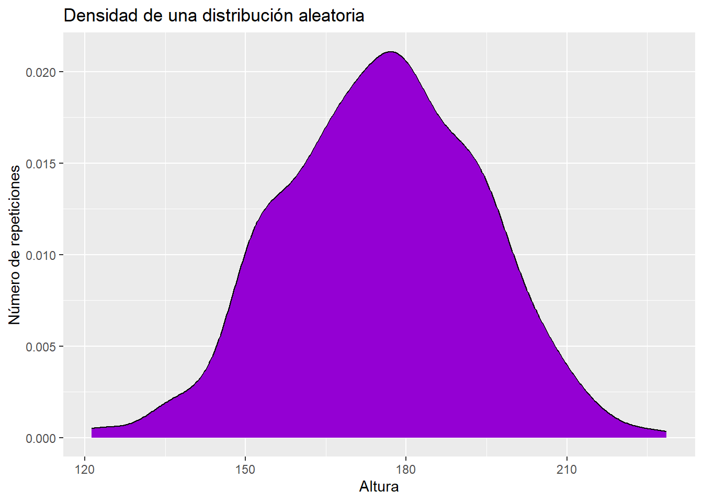

Taller 03 - Estadística Descriptiva y Distribuciones
Modulo de Inferencia
Autores/as
Integrante 1 Nicolas Montoya Leon - 202310678
Integrante 2 John Anderson Acosta - 202212004
Integrante 3 Raquel Bautista Escobar - 202310296
Fecha de publicación
14 de febrero de 2024
1. Explorando datos de tortugas marinas (1.25 puntos)
Cargue el archivo tortugas.txt: Estos datos corresponden a un estudio realizado para determinar cómo la temperatura del nido afecta la proporción de sexos obtenida en una nidada para tres especies de tortugas marinas: Chelonia mydas, Caretta caretta y Dermochelys coriacea.
Para cada uno de los nidos se tomaron medidas de la temperatura promedio durante el día (8:00 am a 3:30 pm) y la cantidad de machos y hembras que nacieron. Luego, se calculó la proporción entre los sexos como Número de hembras / Número de machos.
a. Calcule la media, la varianza y la desviación estándar de la temperatura de los nidos para cada una de las especies e indique el rango intercuartil. Debe presentar los datos en una tabla donde además indique el número de nidos analizados para cada especie.
library(tidyverse)
── Attaching core tidyverse packages ──────────────────────── tidyverse 2.0.0 ──
✔ dplyr 1.1.4 ✔ readr 2.1.5
✔ forcats 1.0.0 ✔ stringr 1.5.1
✔ ggplot2 3.4.4 ✔ tibble 3.2.1
✔ lubridate 1.9.3 ✔ tidyr 1.3.1
✔ purrr 1.0.2
── Conflicts ────────────────────────────────────────── tidyverse_conflicts() ──
✖ dplyr::filter() masks stats::filter()
✖ dplyr::lag() masks stats::lag()
ℹ Use the conflicted package (<http://conflicted.r-lib.org/>) to force all conflicts to become errors
b. ¿Cuál es la especie que presenta una mayor variación en el número de hembras producidas por nidada? Mencione cuál de las medidas de variación utilizó para responder esta pregunta y ¿por qué?
Respuesta:
c. Entre la temperatura y la proporción de sexos ¿Cuál presenta mayor variación? Mencione cuál de las medidas de variación utilizó para responder esta pregunta y ¿por qué?
#En este caso utilizamos varianza, ya que esta permite medir qué tanto cambian los datos entre si, dandonos asi un resultado por cada especie de entre los cuales podemos obtener un resultado mayor.#cvar_temp_nidos <-var(tortugas$Tem.prom_nidos)var_prop_sexos <-var(tortugas$proporcion.sexos)if (var_temp_nidos > var_prop_sexos) {cat("La mayor variación corresponde a 'Temperatura de nidos', siendo esta de ", var_temp_nidos)} else {cat("La mayor variación corresponde a 'Proporción de sexos', siendo esta de ", var_prop_sexos)}
La mayor variación corresponde a 'Temperatura de nidos', siendo esta de 2.823303
#En este caso utilizamos varianza, ya que esta permite medir qué tanto cambian los datos entre si, dandonos asi dos datos (varianzas) entre los cuales se compara directamente r.
Respuesta:
d. Halle la varianza de la temperatura de los nidos de Caretta caretta.
Su grupo está interesado en estudiar los niveles de mercurio en poblaciones humanas. Encuentra un artículo en el que evalúan la concentración de mercurio en sangre (ug/L), cabello (ug/g) y orina (ug/L) de dos poblaciones europeas (A y B). A continuación la tabla de resultados de dicho estudio:
Población
Sangre (ug/L)
Cabello (ug/L)
Orina (ug/L)
A
19
3
53
A
16
2
51
A
21
2
52
A
17
3
49
A
18
5
47
B
18
4
51
B
17
3
48
B
20
4
49
B
19
3
46
B
19
5
47
a. Calcule la media, la mediana, la varianza y los intervalos de confianza del 90% de la media asociados para cada población. ¿Qué población está más afectada? Recuerde organizar bien los datos.
if (media_a > media_b){cat("La poblacion A se encuentra más afectada")}else {cat("La población B se encuentra más afectada")}
La poblacion A se encuentra más afectada
Respuesta:
3. Ustedes deciden hacer un estudio parecido en Colombia. En este caso usando únicamente muestras de cabello debido a la facilidad de toma de muestra. Decidieron evaluar 3 poblaciones colombianas: una cuya economía se basa en la pesquería y minería de oro (Pe_Mi), otra principalmente pesquera (Pe) y finalmente una ganadera (Ga). Las concentraciones de mercurio (ug/g) encontradas se encuentran en el archivo mercurio_colombia.txt. A partir de estos datos grafique:
a. Un histograma de todas las concentraciones indicando la media aritmética con una línea roja y la mediana con una línea verde. Además señale con líneas discontinuas los intervalos de confianza del 95% de la media ¿Hay diferencia entre estas?¿A qué se debe esta diferencia? (para hacer las líneas pueden usar el comando geom_abline() o geom_vline()).
histograma <-ggplot(mercurio, aes( x=mercurio_cabello)) +geom_histogram(binwidth =1, fill ="orange", color ="black") +geom_vline(xintercept = Media, color ="red", linetype ="solid", size =1) +geom_vline(xintercept = mediana, color ="green", linetype ="solid", size =1) +geom_vline(xintercept = intervalos[1], linetype ="dashed", color ="lightblue") +geom_vline(xintercept = intervalos[2], linetype ="dashed", color ="lightblue") +labs(x ="Concentración de Mercurio (ug/g)",y ="Frecuencia",title ="Histograma de Concentraciones de Mercurio en Muestras de Cabello en Colombia" )
Warning: Using `size` aesthetic for lines was deprecated in ggplot2 3.4.0.
ℹ Please use `linewidth` instead.
histograma

Respuesta: si hay diferencias entre las lineas, los intervalos de confianza representan en el que es probable que se encuentre la verdadera media de la población, mientras que la línea de la media representa el valor promedio de la muestra. Asimismo estas lineas de confianza se encuentran en la derecha o izquierda de la mediay varian en su ubicacion pero no en lo alejado que estan de la media
b. Un diagrama de cajas o boxplot con un stripplot comparando las concentraciones de mercurio en cabello de las tres poblaciones. ¿Qué representa cada parte del boxplot? Intérprete y discuta sus resultados.
boxplot <-ggplot(mercurio, aes( x=economia, y=mercurio_cabello)) +geom_jitter(fill ="black", color ="red",width =0.2) +labs(x ="economia",y ="Concentración de Mercurio ",title ="Comparación de Concentraciones de Mercurio en Cabello por economía" ) boxplot

Respuesta: este boxplot de puntos representan todos los datos, desde el valor minimo, ubicado en la parte inferior, hasta el valor maximo, ubicado en la parte superior. De este modo se puede saber en donde se concentra la mayoria de la informacion, donde se ubica la media de los datos y por ultimo estan divididos por la actividad econommica de la poblacion
3. Explorando datos en humanos y sus distribuciones (1.25 puntos)
Cargue los datos bones_dimension.csv, que se encuentran en la carpeta del taller de esta semana. Revise el contenido del archivo.
Importante
En el siguiente link encontrara el significado de las variables del set de datos.
a. Simule una distribución normal aleatoria con una media de 175 y una desviación estándar de 18. Grafíquela.
Rows: 507 Columns: 25
── Column specification ────────────────────────────────────────────────────────
Delimiter: ","
dbl (25): bia.di, bii.di, bit.di, che.de, che.di, elb.di, wri.di, kne.di, an...
ℹ Use `spec()` to retrieve the full column specification for this data.
ℹ Specify the column types or set `show_col_types = FALSE` to quiet this message.
histog <-rnorm(nrow(bones_dimensions), mean =175, sd =18)library(tidyverse)library(palmerpenguins)distr_normal <-ggplot() +geom_histogram(data =data.frame(histog), aes(x = histog), fill ="thistle", color ="black") +labs(x ="valor",y ="frecuencia",title ="Histograma de Distribución Normal" ) +theme_grey()distr_normal
`stat_bin()` using `bins = 30`. Pick better value with `binwidth`.

b. Haga un histograma de la altura de hombres y otro de la altura de mujeres. Adicionalmente, calcule la media y la desviación estándar de cada distribución. ¿Qué puede decir de la altura de los hombres y de las mujeres a raíz de estos histogramas?
new_hist <-ggplot(filtro_men, aes(x=hgt))+geom_histogram( fill ="pink", color ="darkcyan")+labs(x="Altura", y="numero de repeticiones",title ="Histograma altura en Hombres")wom_hist <-ggplot(filtro_women, aes(x=hgt))+geom_histogram( fill ="cyan", color ="deeppink") +labs(x="Altura", y="numero de repeticiones",title ="Histograma altura en Mujeres")new_hist
`stat_bin()` using `bins = 30`. Pick better value with `binwidth`.

wom_hist
`stat_bin()` using `bins = 30`. Pick better value with `binwidth`.

Media_men <-mean(filtro_men$hgt)desv_men <-sd(filtro_men$hgt)cat("La media en Hombres es: ",Media_men, "\n")
La media en Hombres es: 177.7453
cat("La desviacion estandar en Hombres es: ",desv_men, "\n")
La desviacion estandar en Hombres es: 7.183629
Media_women <-mean(filtro_women$hgt)desv_women <-sd(filtro_women$hgt)cat("La media en Mujeres es: ",Media_women, "\n")
La media en Mujeres es: 164.8723
cat("La desviacion estandar en Mujeres es: ",desv_women, "\n")
La desviacion estandar en Mujeres es: 6.544602
#De acuerdo a la información proporcionadda en los histogramas, podemos deducir que el rango donde se encuentra mayor densidad en la altura de las mujeeres es entre 1,60m y 1.70m. De las misma manera, en los hombres podemos observar que la media es aproximadamente 1,78.
c. Realice un gráfico de densidad para la altura en hombres, mujeres y la distribución aleatoria realizada en el punto anterior. Observe y analice las gráficas de densidad obtenidas. ¿Considera que todas presentan una densidad característica de una distribución normal? Explique el resultado observado.
men_dens <-ggplot(filtro_men, aes(x=hgt))+geom_density( fill ="deeppink", color ="cyan")+labs(x="Altura", y="numero de repeticiones",title ="Densidad de altura en Hombres")wom_dens <-ggplot(filtro_women, aes(x=hgt))+geom_density( fill ="darkcyan", color ="pink") +labs(x="Altura", y="numero de repeticiones",title ="Densidad de altura en Mujeres")new_dens <-ggplot(data =data.frame(histog)) +geom_density(aes(x = histog), fill ="darkviolet", color ="black") +labs(x ="Altura",y ="Número de repeticiones",title ="Densidad de una distribución aleatoria" )men_dens

wom_dens
new_dens

#Teniendo en cuenta la distribucion de los datos recolectados, podemos analizar y deducir que en los tres histogramas se presentan una distribución normal. Esto se debe a que estas se caracterizan por tener una estructura gaussiana, es decir, en forma de campana. En otras palabras, los resultados se acumulan en los valores centrales analizados.
d. Utilizando la media y desviación estándar de la altura tanto de hombre y mujeres, obtenga los valores de los primeros 3 cuartiles teóricos asumiendo que las altura siguen una distribución normal. ¿Qué podría concluir a partir de estos resultados?
q1_men <-qnorm(0.25, mean = Media_men, sd = desv_men)q2_men <-qnorm(0.5, mean = Media_men, sd = desv_men)q3_men <-qnorm(0.75, mean = Media_men, sd = desv_men)q1_women <-qnorm(0.25, mean = Media_women, sd = desv_women)q2_women <-qnorm(0.5, mean = Media_women, sd = desv_women)q3_women <-qnorm(0.75, mean = Media_women, sd = desv_women)cat("los 3 pimeros cuartiles para hombres son: ",q1_men,q2_men,q3_men, "\n")
los 3 pimeros cuartiles para hombres son: 172.9001 177.7453 182.5906
cat("los 3 pimeros cuartiles para mujeres son: ",q1_women,q2_women,q3_women)
los 3 pimeros cuartiles para mujeres son: 160.458 164.8723 169.2866
se puede concluir que los cuartiles representan el 75% donde se encuentra la muestra de la altura de las personas, y cada cuartil representa el valor medio o valor esperado de cada cuartil, conociendolo se puede clasificar donde puede caer una persona segun su altura. #### 4. Distribuciones y probabilidades (1.25 puntos)
Responda las siguiente preguntas relacionadas con la probabilidad en una distribución normal
a. ¿Cuál es la probabilidad de que una mujer escogida de la muestra tenga un peso superior a 68kg?